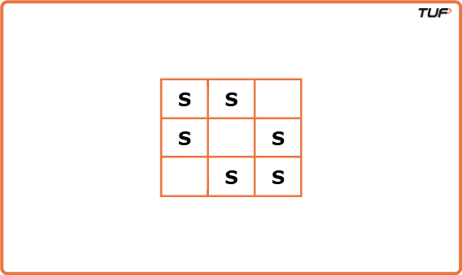
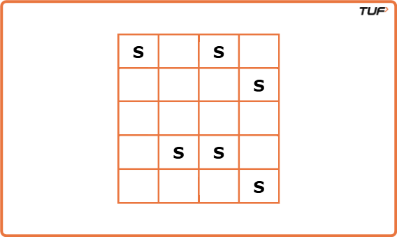
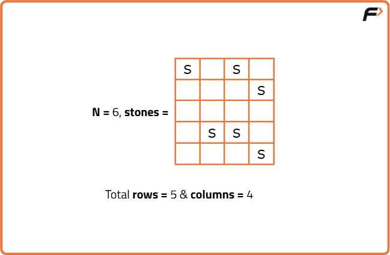
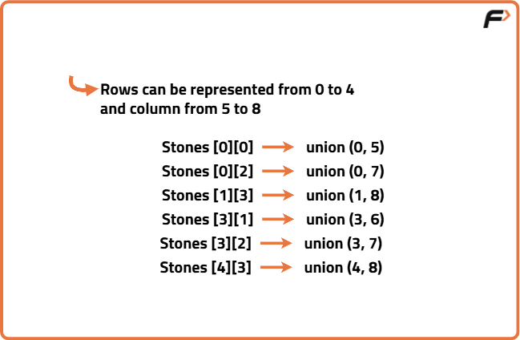
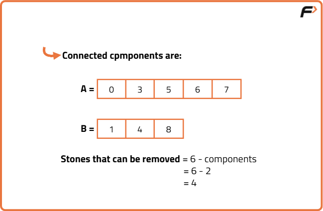

Most Stones Removed with Same Row or Column - DSU: G-53
Problem Statement: There are n stones at some integer coordinate points on a 2D plane. Each coordinate point may have at most one stone.
You need to remove some stones.
A stone can be removed if it shares either the same row or the same column as another stone that has not been removed.
Given an array of stones of length n where stones[i] = [xi, yi] represents the location of the ith stone, return the maximum possible number of stones that you can remove.
Examples
Input: n=6 stones = [[0, 0],[ 0, 1], [1, 0],[1, 2],[2, 1],[2, 2]]
Output: 5 Explanation: One of the many ways to remove 5 stones is to remove the following stones: [0,0], [1,0], [0,1], [2,1], [1,2] Input: N = 6, stones = [[0, 0], [0, 2], [1, 3], [3, 1], [3, 2], [4, 3]]
Output: 4 Explanation : We can remove the following stones: [0,0], [0,2], [1,3], [3,1]
Disclaimer: Here is the practice link to help you assess your knowledge better. It's highly recommend trying to solve it before looking at the solution.
Approach
Algorithm
In this problem, it is clearly stated that a stone can be removed if it shares either the same row or the same column as another stone that has not been removed. So, we can assume that these types of stones, sharing either the same row or column, are connected and belong to the same group. If we consider example 2:
We can easily spot two different groups in this example. The first group includes the stones [0,0], [0,2], [3,2], and [3,1], and the second one includes [1,3] and [4,3].
If we carefully observe, for each group we can remove all the stones leaving one stone intact. Thus, we can conclude that at most we can remove (size of the group - 1) number of stones from a group as we need to leave one stone untouched for each group.
In other words we can also say that, since from every group one stone remains intact whereas other are removed, the total number of stones that remains after removing maximum number of stones is equal to number of groups of stones.
If we carefully observe, for each group we can remove all the stones leaving one stone intact. Thus, we can conclude that at most we can remove (size of the group - 1) number of stones from a group as we need to leave one stone untouched for each group.
In other words we can also say that, since from every group one stone remains intact whereas other are removed, the total number of stones that remains after removing maximum number of stones is equal to number of groups of stones.
- Consider each stone as a node in a graph.
- Create edges between any two stones that are in the same row or same column.
- To efficiently group connected stones, use Disjoint Set Union (Union-Find) to unite nodes (stones) that are in the same row or column.
- While building DSU, treat each row and each column as a unique node
- For each stone, perform union operation between its row index and its column index.
- Track the number of unique connected components using DSU parent roots.
- The number of stones that can be removed is: total stones - number of connected components.



Code
#include <bits/stdc++.h>
using namespace std;
class DSU {
public:
unordered_map<int, int> parent;
// Function to find the ultimate parent of node x
int find(int x) {
// If x is not present, make it its own parent
if (parent.find(x) == parent.end())
parent[x] = x;
// Path compression to optimize future finds
if (x != parent[x])
parent[x] = find(parent[x]);
return parent[x];
}
// Function to connect two nodes
void unite(int x, int y) {
// Set parent of x's root to y's root
parent[find(x)] = find(y);
}
};
class Solution {
public:
int removeStones(vector<vector<int>>& stones) {
DSU dsu;
// Connect each stone's row and column (offset to avoid collision)
for (auto& stone : stones) {
dsu.unite(stone[0], stone[1] + 10001);
}
unordered_set<int> components;
// Count unique connected components
for (auto& stone : stones) {
components.insert(dsu.find(stone[0]));
}
// Max stones removed = total stones - number of components
return stones.size() - components.size();
}
};
int main() {
vector<vector<int>> stones = {
{0, 0}, {0, 1}, {1, 0}, {1, 2}, {2, 1}, {2, 2}
};
Solution obj;
cout << obj.removeStones(stones) << endl;
return 0;
}
Complexity Analysis.
Time Complexity: O(N * α(N)), where N is number of stones. We visit every stone once to unite it with its row and column.Space Complexity: O(N), for the parent map inside the Disjoint Set data structure.